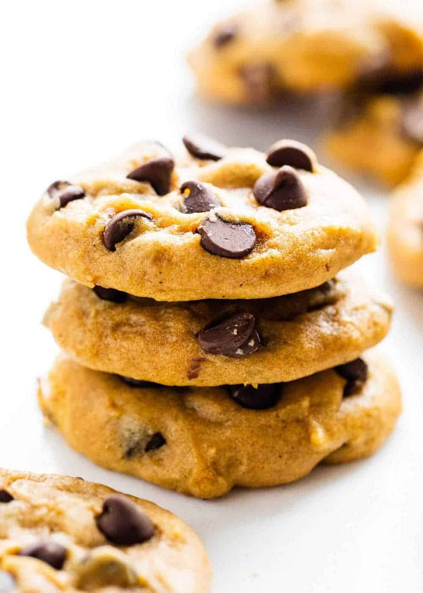

Jump to Ingredients
Jump to Instructions
Contacts
Pumpkin Chocolate Chip Cookies

Patch: 30 cookies
Cook Time: 30 mins
Ingredients
- 2 cups flour
- 2 tsp baking powder
- 1 1/2 ground cinnamon
- 1/2 ground ginger
- 1/2 tsp salt
- 1/2 cup granulated sugar
- 1/2 cup brown sugar
- 1/2 cup vegtable oil
- 1 egg
- 1 cup canned pumpkin
- 1 1/2 chocolate chips
Instructions
- preheat oven to 350 degrees lining cookie sheet
- Mix together flour, baking powder, baking soda, cinnamon, nutmeg, ginger, cloves, and salt
- mix in egg and vanilla
- With spatula fold in chocolate chips, and put on baking sheet
- bake for 11 to 13 minutes
- Allow to cool
Contacts